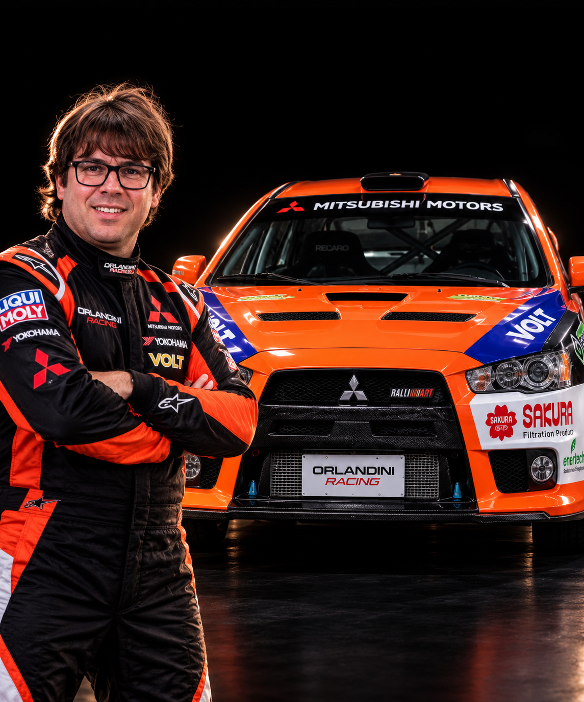

UN SEGUNDO PUEDE CAMBIARLO TODO.
La línea entre la victoria y el límite.
NO HAY CAMINOS. SOLO LÍMITES.
El control absoluto empieza donde termina el asfalto.
DESCUBRE EL UNIVERSO RALLY↗NO ES SOLO UNA CARRERA
Cada curva exige valentía. Cada segundo requiere precisión. Cada kilómetro escribe una historia. Esto es Rally: donde el piloto y la máquina se convierten en uno.
HECHAS PARA LO IMPOSIBLE
Potencia, tracción y precisión. Las máquinas más extremas desafían los terrenos más salvajes.
EXPLORAR LA COLECCIÓN↗THE GARAGE
Sin concesiones. Sin atajos. Una nueva forma de descubrir las máquinas que desafían la gravedad.
04 / MÁS ALLÁ DEL ASFALTO
Polvo. Barro. Grava. Nieve. El terreno cambia. La pasión nunca.
VIVE LA EXPERIENCIA↗
THE DRIVER / ORLANDINI RACING
Una misma pasión. Un piloto, su máquina y la búsqueda constante del límite.
BEYOND THE RACE
La línea entre la victoria y el límite.
Donde el motor habla más que las palabras.
La aventura empieza después de la última curva.